H1Z1 - From Xbox One to Smash Bros, It's the Top 5 News of the Week - IGN Daily Fix
1:50 MIN
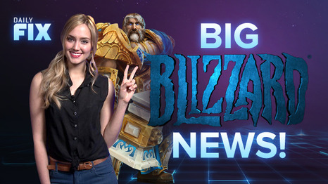
Infamous: Second Son - Big Blizzard News & Rock Band's Return - IGN Daily Fix
2:45 MIN
Freaks and Geeks - 7 Shows You Should Binge Watch - What to Watch
3:27 MIN
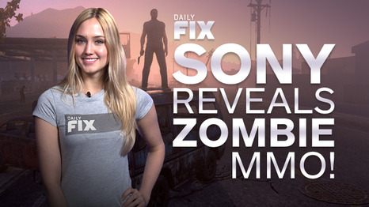
Infamous: Second Son - Sony's Zombie MMO Reveal & No Kinect Love - IGN Daily Fix
3:39 MIN
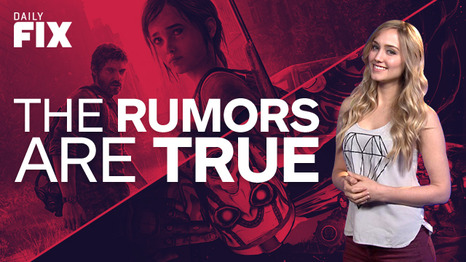
Watch Dogs - Last of Us PS4 & New Borderlands Revealed - IGN Daily Fix
2:02 MIN
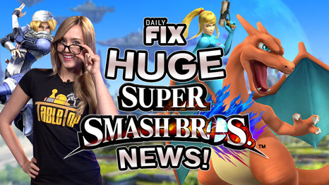
Super Smash Bros. for Nintendo 3DS - Huge Smash Bros & Xbox One Update Details - IGN Daily Fix
2:21 MIN
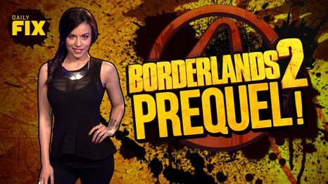
Borderlands 2 - X360 on X1 Plans & Borderlands 2 Prequel? - IGN Daily Fix
2:47 MIN
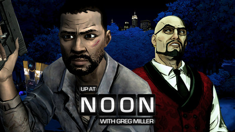
The Walking Dead: A Telltale Game Series -- Season Two - From Walking Dead to Wolf Among Us to Borderlands: Dave Fennoy on Up at Noon
21:51 MIN
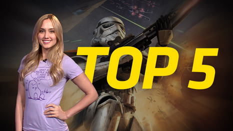
Grand Theft Auto Online - From GTA Online to Star Wars, It's the Top 5 News of the Week - IGN Daily Fix
1:49 MIN
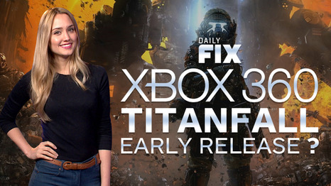
Doom - 5-Year-Old Hacks X1 & 360 Titanfall Drops - IGN Daily Fix
2:41 MIN
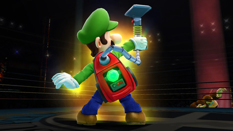
Super Smash Bros. for Wii U - New Super Smash Bros. In-Depth Analysis (04/04/14)
7:28 MIN
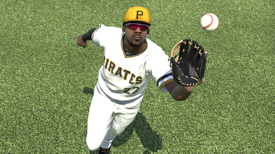
MLB 14: The Show - MLB: The Show 14 Review
4:35 MIN
Halo - Steven Spielberg Project - Star Wars New Hire & Nintendo Trouble - IGN Daily Fix
3:32 MIN
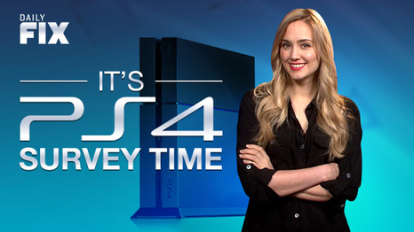
EverQuest Next - PS4 New Features Hinted & EA Apologizes - IGN Daily Fix
2:30 MIN
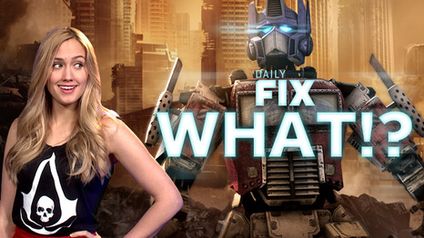
Watch Dogs - Infamous Update & Optimus in Titanfall? - IGN Daily Fix
3:02 MIN
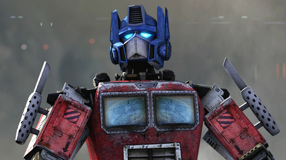
Titanfall - Titanfall: Optimus Prime DLC Trailer - IGN Originals
1:13 MIN
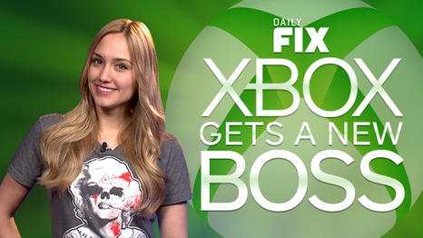
Square Enix Goes Back to Core, Metro: Redux Coming? - IGN Daily Fix
2:08 MIN
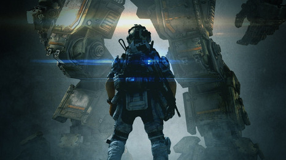
Titanfall - 13 Tips to Dominate in Titanfall - Best Way to Play
3:02 MIN
Minecraft - From Assassin's Creed: Comet to Oculus FB, It's the Top 5 News of the Week - IGN Daily Fix
2:23 MIN
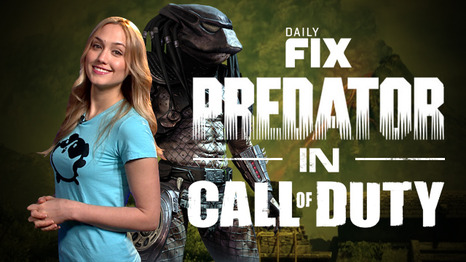
Call of Duty: Ghosts - Uncharted Director Quits & Predator COD? - IGN Daily Fix
4:08 MIN
Next